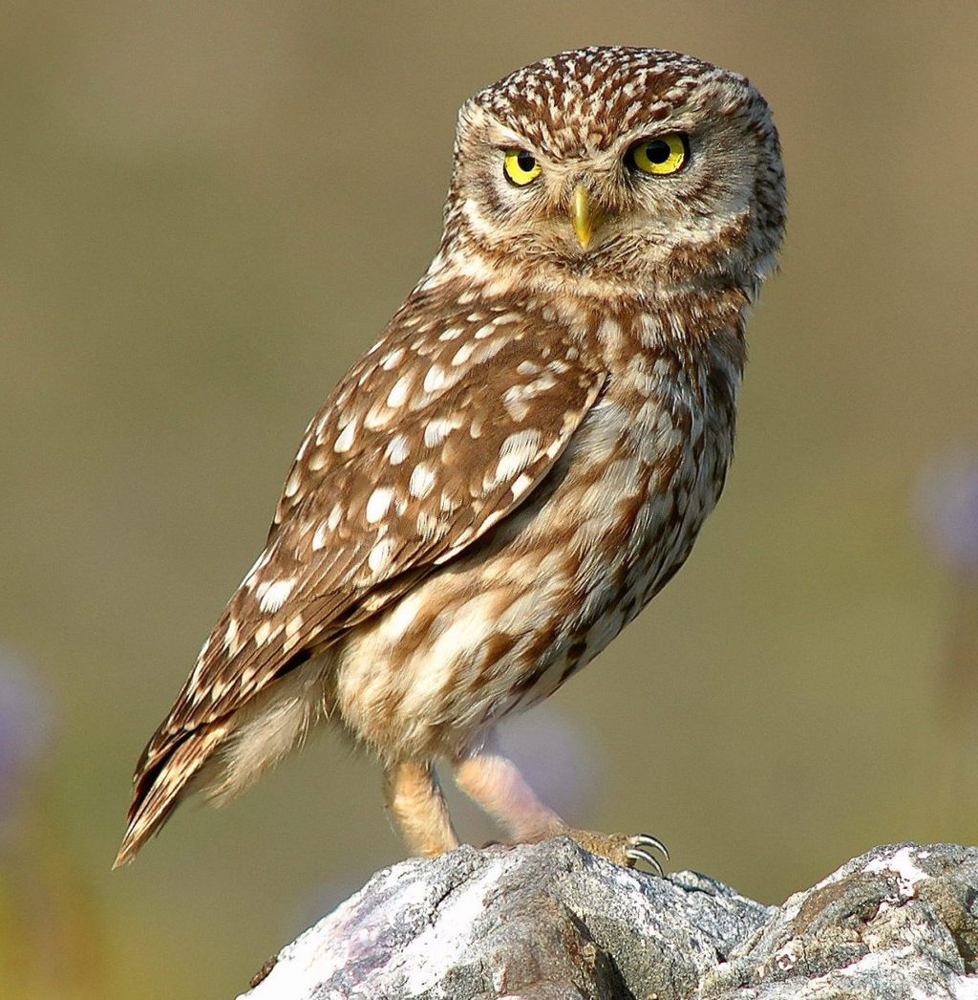

Owl
Owls are capable of rotating their heads 270°.
- Scientific Name: Strigiformes
- Average Length: 13 - 16 inches
- Average Lifespan: 4 years
- Habitat: Forests
In the animal kingdom, there is an order called Strigiformes. Owls belong to this order. This order contains approximately 200 species of mostly solitary and nocturnal birds of prey. They are generally characterized by an upright gait, sharp talons binaural hearing, binocular vision, a large head and feathers perfectly suited for quiet flight. Owls are by nature, carnivores, feeding on small rodents and insects and sometimes other birds. They exist everywhere except Antartica and some far away islands. There are two families of owls: the Strigidae (family of true owls) and the Tytonidae (family of barn owls).